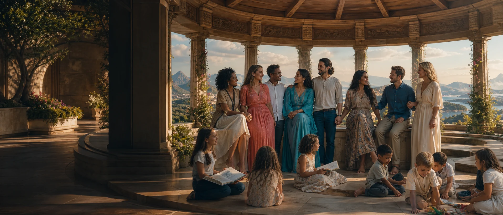

Family Assembly
Every adult voice and the age-appropriate voices of children enter the shared picture.

Imagine a specific love marriage among beautiful, intelligent, sexually active adult women and men in their prime, drawn from many cultures, making and raising children together.
Concept artwork
The present United Nations brings states together to maintain peace, develop friendly relations, cooperate on international problems and harmonise action. The U.N. of Love asks what those purposes reveal when the members are not states but spouses sharing bodies, homes, work, culture, sexuality and future generations.
The U.N. of Love is not affiliated with the United Nations and is not proposed as its replacement. It is a mind-stretching marriage thought experiment placed beside the wider GAJRA Earth vision.
The comparison is deliberately exact enough to produce new questions.
| Present United Nations | U.N. of Love |
|---|---|
| 193 member states | A specific constellation of self-sovereign adult spouses |
| A Charter between nations | A living marriage covenant between people |
| Diplomatic and institutional relationships | Romantic, sexual, familial, cultural and creative relationships |
| International cooperation | One cross-cultural household cooperating every day |
| Peace, security and mediation | Intimate diplomacy, conflict repair and protection of belonging |
| Budgets, agencies and programmes | Pooled time, care, income, housing, skills and attention |
| Future generations as a policy responsibility | Their own children as loved people present in the room |
| Knowledge gathered from institutions | Collective intelligence grown through shared life |
Present UN purposes: Charter of the United Nations, Article 1. Membership figure: United Nations membership of principal organs.
Not departments imposed on love, but useful names for capacities the family practises.
Every adult voice and the age-appropriate voices of children enter the shared picture.
Health, rest, parenting, meals, home-making, elder care and emotional load become visible work.
Money, property, paid work, education, risk and abundance are coordinated without erasing personal resources.
Languages, food, stories, rituals and places of origin meet without one culture becoming the default world.
Pregnancy, birth, children, education and the world they inherit receive direct long-term attention.
Conflict is translated, responsibility is named and relationships receive time to change course.
The present UN may negotiate food systems. The marriage grows food, cooks dinner and notices who has not eaten.
The present UN debates displacement. The marriage feels borders when a spouse cannot travel home.
The present UN speaks for future generations. The marriage wakes at 2 am with one of them.
The present UN convenes cultures. The marriage discovers whether several cultures can share one kitchen, calendar, body of rituals and lineage of children.
What would diplomacy become if nobody could leave the consequences in another country?
What would collective intelligence become if it included desire, birth, jealousy, tenderness, sleep and daily care?
What would peace mean if it had to be practised between breakfast and bedtime?
What kind of children might grow from a family that treats cultural difference as inherited wealth?